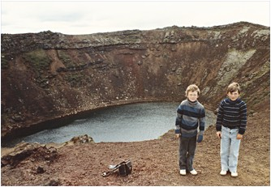
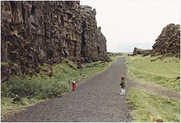
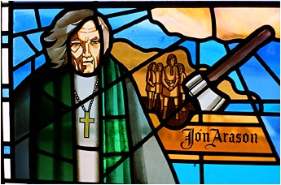
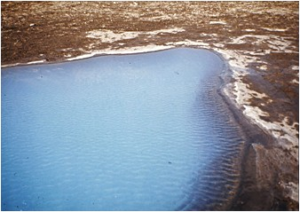
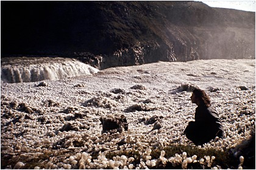

<< retur Den Gyldne Trekant Fra Hveragerdi mod Thingvellir Med
smagen i munden af æblet fra Edens have kører jeg
ud af Hveragerdi og drejer til venstre mod byen Selfoss Jeg agter
nu at sætte kursen mod det første hjørne i
Den Gyldne Trekant, nemlig Thingvellir ved søen Thingvallavatn.
Mens jeg kører ud af byen, tænker jeg over den gamle
myte fra 1. Mosebog om syndefaldet i Edens have.Kan denne myte
bruges til noget i dag? Er den stadig sand på et dybt arketypisk
plan? Eller må myten vendes om, så det at have kendskab
til godt og ondt kan føre én ind i paradistilstanden
af drømmende uskyld?
Havde Eva ikke ladet sig lokke af slangen - hvad så? Havde
Adam og Eva så stadig levet i denne tilstand af drømmende
uskyld og endnu ikke opdaget, at de var nøgne? Hvad vil
det sige at have kendskab om godt og ondt? Er det seksualiteten
eller er det evnen til at se Gud efter i kortene og aflure skaberværket
dets hemmeligheder, altså vores analytiske evner - vores
intellekt?
Begge dele ville være absurde for et nutidsmenneske skolet i den naturvidenskabelige tankegang. Vores seksualitet og vores intellektuelle formåen ligger i os som en matrix fra fødslen af og må således være gudsskabte og ikke en trussel for Gud.
Vi har fået del i udødeligheden på slægtens
plan, men ikke den individuelle udødelighed. Vores iboende
seksuelle drift er en gave, der som alle gaver kan bruges eller
misbruges. Eros løfter os mod himmelen sammen med vores
udvalgte partner, medens den rå driftsbetonede seksualitet
kan være med til at korsfæste sjæle, der bliver
brugt som middel og ikke som mål i sig selv.
Hvis syndefaldsmyten skal kunne tolkes nutidigt, må det
være noget i den retning. De guddommelige kræfter
i os, som kærligheden og seksualiteten og vores intellektuelle
formåen, er potentielt paradisiske, hvis de bruges efter
hensigten, og livsnedbrydende, hvis de bruges imod den nedlagte
intention - og så kan vi blive smidt ud af paradiset igen
og igen. Det drejer sig med andre ord om at lytte godt efter -
indad og opad.
Jeg ser nu Ingolfsfjáll ret forude på venstre hånd.
Måske ligger Ingólfur Arnarson begravet her. Fjeldet
rejser sig med stejle sider mod vest og syd og ser fladt ud på
toppen, som et taffelbjerg. Der er ingen tvivl om, at det er rester
af en vulkan, dannet under isen i sidste istid. For foden af fjeldet
ligger der kæmpeblokke, som har taget sig en tur ned af
skråningerne og lagt sig til hvile ligesom Ingolf. l slutningen
af sidste istid var hele lavlandet omkring Hveragerdi én
stor havbugt, hvor bølgerne stod og skvulpede ind mod Ingolfsfjálls
kystklint.
I lavlandet foran fjeldet ligger et forholdsvis nydrænet landbrugsområde med nyere gårde. Ud mod vejen kører en bonde med sin splinternye traktor og vender hø. Jeg kan se, at han lytter til god musik med hovedtelefoner på og kaffekanden stående i holderen til højre for rattet. Jeg kan ikke lade være med at tænke på Guds dom over Adam. Fordi han havde lyttet til sin kvinde, skulle han smides ud af paradiset og dyrke jorden med møje og æde sit brød i sit ansigts sved for derefter at vende tilbage til den jord, han var skabt af.
Midt
på Ingolfsfjálls sydside drejer jeg mod nord ad rute
35 mod Grimsnes og passerer en bro over floden Sog med det krystalklare
vand, der kommer fra Thingvallavatn. Jeg vil gerne gense en gammel
bekendt - en vulkan ved navn Kerid, som snart dukker op på
højre hånd. Jeg holder ind til siden og slukker motoren
og begiver mig op ad vulkanflanken mod krateret. Snart står
jeg på kanten og kikker ned i krateret, hvor der er en lille
kratersø. Her er vidunderligt stille, så jeg går
lidt ned i krateret og sætter mig på et lille plateau,
hævet over søens overflade. Her var jeg sidste gang
for 20 år siden med mine to sønner Jón og
Bjarke, der begge har fået de gode islandske navne. De dukker
nu op for mit indre blik ca. 8-10 år gamle.

Siddende i kraterdybet kommer et vers til mig, jeg engang læste i en digtsamling ”Vinde over jøklen” udgivet på Grevas Forlag i 1971. Det var skrevet af Bjarni M. Gislason og lyder sådan her:
”Og hvad skal jeg med nye katastrofer,
når jeg i ødet her nær ved døden,
at græs og fugle flygter lange veje,
og selv en flue finder ikke føden.
Men det er dog kun løbesod at mene,
at kraterdybets kældersmil er sorte,
for bjergets luft har fundet læ i skålen,
og himlens stjerner - de er ikke borte.”
Thingvallavatn
og Thingvellir
Efter denne rolige og oplivende stund kører jeg nu lidt
tilbage og følger så rute 36 mod nord langs Alftavatns
østlige bred. Snart kommer jeg til Thingvallavatns sydøstlige
hjørne, hvor floden Sog starter sit løb. En mægtig
vandflade møder mit øje - det virker næsten
som et helt indhav. Thingvallavatn er med sine 82 km2 Islands
største sø med dybder på ned til 114 meter
- ca. 10 meter under havets overflade.
Jeg kører gennem bølgende lavamarker med markante
sprækkezoner omgivet af blødt mos, der indbyder til
et hvil med mosset som hovedpude. Solen skinner, og jeg ligger
i læ og lytter til vinden i græsset, indtil en flok
japanske turister standser og myldrer ud af en bus for at fotografere.
Jeg kunne have gået lidt længere ind i lavamarken
(hraun), men sætter mig ind i bilen igen og kører
nu helt op til parkeringspladsen tæt på Thingvellir
- den gamle Altingsslette.
Fra parkeringspladsen går der et stisystem i retning af
Almannagjá (hvermandsspalten), der rejser sig som en lodret
mur i det fjerne. Undervejs passerer jeg spalter, hvor der står
iskoldt, krystalklart vand. Et sted går der en bro over
en dyb spalte (Peningargjá)-pengespalten. Et kik ned i
den dybe spalte forklarer navnet. På bunden af spalten med
det dybe, krystalklare vand ligger tusindvis af mønter,
og stedet fungerer øjensynligt som en ønskebrønd.
Jeg kaster en islandsk mønt i vandet, og medens jeg følger
dens vuggende fald mod bunden ca. 10 meter nede, ønsker
jeg, at vandet her altid må forblive krystalklart og rent.
Mønten lægger sig til hvile på en lille afsats
lige over bunden, og jeg ved, at min bøn er blevet hørt.
Jeg er altså nu på stedet for Europas ældste
parlament (Altinget), som fungerede igennem hele fristatstiden
fra 930 og op til 1262,hvor Island kom under Norge og siden Danmark.
Man fortsatte dog med at mødes på Altingssletten
hvert eneste år helt op til 1789, hvor et jordskælv
sænkede dalbunden ca. 3 meter. Herefter blev Altinget, som
retsinstans, flyttet til Reykjavik, som lige havde fået
købstadsrettigheder og havde en befolkning på ca.
300 indbyggere
Snart
efter står jeg på Lovbjerget (Lögberg), som ligger
på en stor lavablok, der er sunket ned mod Altingssletten
nedenfor, hvor der ligger rester af de gamle boder (Budir), som
tjente som sommerboliger for goderne (høvdingene) under
opholdet på Altinget. Murene stod år for år
- tagene var en medbragte teltduge af vadmel.
Lige over for Lögberg ligger Almannagjá, som lovsigemanden
råbte ind imod for at bruge den lodrette lavavæg som
højttaler, så alle på sletten bagved kunne
høre, hvad han sagde. Han skulle kunne lovene udenad og
proklamerede dem hvert år fra Lovbjerget.
Det var her, lovsigemanden Thorgeir proklamerede beslutningen
om at indføre kristendommen som religion for hele folket
i år 1000. Det må have været en vanskelig beslutning,
i og med at de hedenske guder med Odin og Thor i spidsen trivedes
i bedste velgående på det tidspunkt. Thorgeir måtte
da også tilbringe en hel nat i voldsom spekulation under
et skind, før han traf sin beslutning og kunne rejse sig
næste morgen og bestige Lovbjerget og råbe mod Almannagjá,
så det gjaldede ud over Altingssletten, at nu var Island
et kristent land, om end det blev accepteret, at man dyrkede sine
gamle guder i det skjulte. Thorgeir selv viste sig som et godt
eksempel ved at kaste sine hedenske gudestatuetter i Godafoss
på Nordlandet, da han vendte hjem til sin gård ved
Ljósavatn senere på sommeren i år 1000. Set
i bakspejlet var det en særdeles klog beslutning, han traf,
idet kristendommen allerede var veletableret i både Danmark
og Norge.
Medens man på Altinget diskuterede, hvorvidt kristendommen
skulle indføres eller ej, gik bølgerne højt
både for og imod, og mange af de hedenske høvdinge
var stærkt imod en sådan beslutning, der brød
med de hedenske guder,som havde tjent folket så vel i mange
år. Under diskussionerne kom der bud om et vulkanudbrud
i området Ölfus lige syd for Thingvallavatn. Her boede
en hedensk præst ved navn Thoroddur, hvis gård nu
var truet med ødelæggelse af lavastrømmen.
En af hedningene sagde, at han ikke var forbavset over, at de
hedenske guder var vrede over en sådan beslutning. Hertil
svarede den hedenske høvding Snorri: ”Hvad var guderne
da vrede over, da den lava, vi står på nu, blev dannet?”
En bemærkning, som viser os et tidligt mere nøgternt
syn på islandsk vulkanisme.

Jeg står stadig på Lögberg og kikker på Almannagjá (hvermandsspalten), som rækker næsten 8 km i retningen NNØ-SSV mod Armannfell. Den lodrette lavavæg er imponerende, og man kan se lag på lag af lava med flotte ansatser til søjlebasalt mange steder. Mellem to sådanne søjler i det øverste lag sidder der kilet en stor lavablok fast. Der skal ikke megen bevægelse til, før søjlerne ville slippe taget og droppe stenen de 30-40 meter ned på stien, der går for foden af Almannagjá, hvor der netop passerer en flok turister. (www.oplevisland.dk/thingvellir.html)
Nordøst for søen ligger en tilsvarende spalte, Hrafnagjá,
som er 11 km lang og 68 meter bred og ca. 30 meter høj.
Mellem disse to spalter synker Thingvallavatn i dybet samtidig
med, at Island vokser i bredden ved at vulkanudbrud med masser
af udflydende lava kitter spalterne sammen igen. Island forynges
fra midten. Afstanden mellem Almannagjá og Hrafnagjá
er forøget med 70 meter på ca. 9000 år, svarende
til ca. 7 mm pr år. Tilsvarende er bunden af Thingvellir
sunket med over 40 meter svarende til ca. 1 mm pr år.
Har man tålmodighed til det, kunne to venner stille sig et års tid på hver sin spalte og måle afstanden med en laserstråle. Det er dog ikke nødvendigt, da GPS og satellitter klarer opgaven nemmere og mere præcist.
Det
er tankevækkende at stå det sted i Atlanterhavet,
hvor den Europæiske Plade og den Amerikanske Plade går
hver sin vej. Enorme kræfter fra opstigende varmestrømme
i jordens kappe er drivkraften, som får skorpen til at revne
og lava til at strømme ud.
Det slår mig, at her hvor sammenhængskraften i jordskorpen
er mindst, opstod Europas første parlament, som skabte
sammenhængskraften i et kæmpeland, hvor naturen udgjorde
de størst mulige hindringer for at samles.
Jeg forlader nu Lögberget og vandrer mod nord langs med Økseelven
(Öxará) til Öxaráfoss, som kan nås
via nogle gangbroer af træ, som gør turen bekvem.
Fossen inviterer mig til nogle stille øjeblikke med lyden
af faldende vand og synet af dansende vanddråber med glimt
af regnbuer. (www.oplevisland.dk/thingvellir.html)
Fra Thingvellir mod Laugarvatn
Tilbage ved bilen kører jeg nu mod nord, til jeg møder rute 36. Foran mig ligger den gamle vulkan Armannsfell og bag ved den skjoldvulkanen Skjaldbreidur (det brede skjold), hvis lava danner bundlaget under Thingvellir.
Til højre ad rute 36 går vejen igennem Thingvallahraun forbi Hrafnagjá. Mod nordøst ligger vulkanen Hrafnabjörg, hvis lavaer har skabt det tykke lavalag som udgør Almannagjá. Ved Gjábakki drejer jeg vestpå ad rute 365 mod Laugarvatn. Efter kort tids kørsel dukker den brede, flade skjoldvulkan Lyngdalsheidi op mod syd, og på venstre hånd, mod nord, ligger bjergkammen Kalfstindar, der er dannet ved et spalteudbrud under isen i sidste istid. Netop det bløde materiale i dette højdedrag har bidraget til en interessant historie om de sidste huleboere på Island, som slog sig ned i tuflagene i den sydlige del af Kálfstindar tæt ved rute 365,som her hedder Kongsvegur.
Hulerne hedder Laugarvatnshellar og var beboet indtil 1921, hvor
Christian den X kom forbi med en check til den lille familie,
som derefter kunne flytte til byen. Jeg kører væk
fra Kongsvegur og parkerer foran hulen. Der er ikke meget at se
nu,da hulen er styrtet sammen, men jeg har været så
heldig at få fortalt historien af en islænding, hvis
mormor netop er født her.
Laugarvatn
Fra Laugarvatnshellir går turen videre mod Laugarvatn, hvor
der ligger en kostskole og et særdeles velbesøgt
dampbad (Gufubad), der nærmest har gjort den lille by til
et kurcenter. Jeg parkerer ved ”gufubadet” nede ved
søen, hvor der svømmer et par islandske jenter for
at køle sig lidt efter en tur i dampbadet.
Her lugter af svovlbrinte-en evig påmindelse om varmen i
undergrunden. Lidt længere mod øst ligger der et
lille anlæg med en gammel, helbredende varm kilde, som er
stensat i en lille laug(Vigdalaug) og omkranset af større
lavablokke. Her lod flere af de kuldskære vikinger sig døbe
i år 1000, da vandet her var betydelig varmere end i Thingvallavatn.
Stenene omkring laugen hedder ligstenene, fordi det var her, ligene
af den sidste katolske biskop i Hólar sammen med sine to
sønner blev bragt til, efter at de alle tre var blevet
halshugget i 1550. Hans brøde var, at han ikke ville lade
sig reformere- og hans sønner støttede ham. Han
var godt nok tilfreds med at høre under paven i Rom - det
trak mere end kongen af Danmark.
Ikke langt fra det lille minderige anlæg ligger en restaurant
med udendørs servering. Her sætter jeg mig og bestiller
islandske pandekager godt spækket med flødeskum og
dertil en stærk kop kaffe. Tættere paradiset kan jeg
ikke komme her.
Alle mennesker søger på en eller anden måde
at komme i kontakt med deres forestillinger om paradiset. Jeg
har en kær broder Vilhelm, som efter 28 år som sognepræst
sagde sin stilling op og solgte alt, hvad han ejede for derefter
at drage ud til nogle paradisiske øer-Tonga-øerne-
i det sydvestlige Stillehav. Her lever han i sit tropiske paradis
kun afbrudt af foredragsturneer rundt i det danske rige, hvor
han fortæller om opbruddet og sit nye liv.
Min datter Liv synes, at paradistilstanden har noget at gøre
med tid og nærvær til at være sammen med dem,
man holder af- helst i lune omgivelser.
Selv hælder jeg til den kølige udgave af paradis
og har fundet min nordlige variant her ude midt i Atlanterhavet.
Her føler jeg mig hjemme og tryg og kan undre mig over,
at jeg ikke er flyttet herop for længe siden. Det er dog
nok særdeles vanskeligt at gøre paradiset permanent.
Det
nærmer sig sengetid, og jeg er ved at være træt,
selv om solen stadig står på himlen og kaster et rødligt
skær på fjeldene nord for byen. Når solen står
lavt i horisonten, intensiveres farverne rødt, brunt og
grønt, og fjelde og græsgange bliver nærmest
selvlysende at se på.
Turen går nu ad rute 37 mod syd- vesten om Laugarvatn og Apavatn. Jeg har booket mig ind på en bondegård for natten på gården Sel i Grimsnes. Her bliver jeg modtaget af værtinden med megen venlighed og får anvist et dejligt værelse på 1.sal med udsigt mod Skálholt Domkirke og Hekla i det fjerne. Om
natten drømmer jeg, at jeg befinder mig i en svømmehal,
der ligger meget højt oppe på et bjerg. Jeg bliver
spurgt, om jeg gerne vil en tur ud at svømme og svarer
bekræftende. Derpå bliver jeg bedt om at gå
ud på en platform, hvor der kommer en trappe til syne. Jeg
stiller mig på trappen, som nu bliver sænket nedad
og får at vide, at jeg om lidt kan se vandfladen under mig
og trygt springe på hovedet i vandet. Til min store rædsel
opdager jeg, at vandfladen ligger flere hundrede meter under mig,
og jeg står nu på trappens nederste trin og kikker
ned i afgrunden. Jeg ved, at jeg kan springe, fordi jeg drømmer
og er fristet til at sætte af og nyde svævet ned -
men det svimler for mig, jeg vover det ikke og vælger at
gå ud af drømmen igen. Jeg vågner med en sugende
fornemmelse i maven og er både lettet og skuffet over, at
jeg ikke vovede springet. Jeg var jo i denne forunderlige, sjældne
tilstand af drømmende uskyld, hvor alt er muligt. I denne
tilstand kunne jeg have hengivet mig til det ultimative spring
med min udødelige krop og nydt faldet mod havet under mig,
men ak! Jeg turde ikke- for sæt nu, at det alligevel ikke
var en drøm, så ville jeg have vågnet ved at
dø.
Skálholt
Efter
en solid morgenmad kører jeg næste morgen over til
det gamle bispesæde Skálholt, som jeg har glædet
mig meget til at gense, da det nu er 20 år siden, jeg var
her sidst. Jeg kan se, at der er udgrav-ninger i gang over et
stort område syd og sydvest for kirken (se link www.instarch.is)
Udgravningerne kommer til at stå på i 5 år indtil
2007 og forventes at kaste yderligere lys over dette fantastiske
steds historie helt tilbage til 1056, hvor Isleifur Gissurarson
blev viet til biskop i Skálholt af ærkebispen af
Bremen.
Jeg går ind i kirken og bliver med det samme betaget af
det specielle lys, der er i kirkerummet med de mange glasmosaikker
i sidevinduerne. Det er de blå og røde farver, der
dominerer og kaster netop det lys ind i rummet, der får
Kristusskikkelsen bag alteret til at fremstå lysende klar.
Det er som om Kristus gennembryder endevæggen og åbner
et vindue mod himmelen og fjeldene udenfor. Først tror
jeg, at der er tale om et vævet tæppe, der hænger
ned foran korgavlen, men ved nærmere eftersyn kan jeg se,
at billedet er skabt af kunstneren Nína tryggvadóttir,
som en mosaik af tusinde små fragmenter i farverne blåt,
brunt og grønt.
Kun få kirker i Danmark har bevaret denne enkelhed og lyssymbolik,
som taler til mit religiøse instinkt. Jeg synes generelt,
at det er synd at de oprindelige apsis-vinduer er muret til, så
lyset fra den opgående sol ikke kan komme ind i rummet.
Der er dog heldigvis kirker i Danmark, hvor denne lyssymbolik
stadig er stærkt til stede. Det gælder f.eks. Hellig
Kors Kloster ved Lem, Tveje Merløse ved Holbæk, Jelling
kirke, og så er der Alderslyst kirke i Silkeborg, hvor Sven
Havsteen-Mikkelsens glasmosaikker skaber lysmagi i kirkerummet.
Jeg
sætter mig foran alteret og nyder rummets symboler og fornemmer
stilheden og historiens vingesus. Den første kirke på
stedet blev bygget for næsten 1000 år siden, medens
den, jeg sidder i nu, blev indviet i 1963, efter at det første
spadestik var taget i 1956- 900 år efter at Isleifur satte
sig i bispestolen.
I 1700-tallet var der trange tider på Island med kulde og hungersnød samt store vulkanudbrud som Lakagigars i 1783-84. Store jordskælv lagde Skálholt i ruiner i august 1784, hvorefter bispesædet og latinskolen blev flyttet til Reykjavik.
Nu er stedet igen et kulturelt centrum, der trækker folk til fra hele verden. Her er både højskole og kursuscenter samt mulighed for retræte. I kirken holdes der mange koncerter specielt i sommerhalvåret, fordi akustikken i kirkerummet stort set ikke fås bedre på Island.
Inden jeg forlader bygningen, går jeg ned i kirkens krypt
og kikker på en kæmpesarkofag. Den har rummet de jordiske
rester af den 7. biskop i Skálholt, Páll Jónsson,
som døde i 1211. Han havde selv beordret sarkofagen udhugget
”yderst kunstfærdigt”. I 1954 dukkede den så
op igen, under en udgravning på kirkegården, efter
mere end 740 år i jordens skød. Da sarkofagen blev
åbnet den 30/8-1954, kom der et vældigt skybrud, og
i kisten lå den ærværdige biskops gyldne knogler
- særdeles velbevarede. Toppen af bispestaven var stadig
intakt og kan beses på Islands nationalmuseum i Reykjavik
(http://www.natmus.is/english)
Da biskoppen i sin tid døde, siges det i de gamle skrifter, at ”selv jorden skælvede og rystede, himmel og skyer græd, så at en stor del af jordens frugter fordærvedes, og himmellegemerne bar simple dødstegn til skue.”
Jeg forlader kælderen gennem den gamle underjordiske tunnel,
som i middelalderen var en løngang mellem skolen og kirken.
Nu fører den ud i det fri, hvor jeg får øje
på en gammel mindesten mod sydøst - langt bag den
skimtes konturerne af Hekla. Henne ved stenen ser jeg, at det
er en mindesten over Jón Arason, som blev halshugget her
den 7/11- 1550 sammen med sine to sønner.
Efter at have læst lidt i informationsheftet om Skálholt kan jeg se, at den gode biskop Jòn fra bispesædet Hólar på Nordisland gik temmelig vidt i sin kamp mod reformationsspøgelset, som ubønhørligt nærmede sig på diktat fra kongen af Danmark. Da
den første lutheranske biskop Gissur Einarsson i Skálholt
var død i 1548 efter 8 år i embedet, øjnede
Jón Arason en chance for at besætte bispestolen i
Skálholt med henblik på at erklære sig for
den rette arvtager til hans job. Han lod Gissur Einarssons lig
grave op og kaste i en affaldsdynge. Samtidig tog han den nyudnævnte
lutherske biskop til fange og holdt ham indespærret på
bispesædet Hólar i nord. I to år holdt han
skansen bogstavelig talt over de to bispestifter, men så
var det også slut med danskernes langmodighed. Jòn
Arason blev taget til fange under et væbnet angreb på
en modstander i Skálholt stift. Kort tid efter blev han
halshugget uden domsafsigelse, da det sidste skib til Danmark
var sejlet for den vinter. Først næste år kom
den kongelige flåde til Island for at tage Jón Arason
til fange. Man anede ikke, hvad der var sket.
Det fortælles, at da Jón knælede for bøddelen, stod præsten Svein ved Jóns side for at yde ham en vis sjælesorg og han sagde til ham: ”der er et liv efter dette” hvorefter den ærværdige biskop lakonisk svarede: ”Det ved jeg godt lille Svein”- en vending som siden gik over i det islandske sprog som svar på noget, der synes selvindlysende. Herefter befalede biskoppen sin ånd i Guds hænder og mistede hovedet.

Jón Arasons modstand mod reformationen var egentlig forståelig nok. Han levede som en fri mand og nød stor anseelse i bispedømmet i nord, hvor han havde kone og en hel del børn, selv om han egentlig burde have levet i cølibat. Han frygtede mere end noget, at den danske konge skulle få mere magt og kontrol over kirken, og denne frygt viste sig ikke helt ubegrundet. Alt klostergods blev konfiskeret, og bispetiendet gik nu også til kongen i Danmark.
Gunnar Gunnarsson har skrevet en roman om den genstridige biskop, som absolut er værd at læse.
Geysir- ”rasende vand”
Jeg forlader nu det historiske sted og kører mod Geysir
ad rute 35 over Reykholt. Inden længe holder jeg på
parkeringspladsen over for indgangen til geysernes nationalpark.
Her er fyldt op med biler til bristepunktet, og da jeg går
ind på cafeteriet for at få lidt at spise, er jeg
ved at få et chok. Her vrimler med mennesker og køerne
er mega lange- noget jeg overhovedet ikke er vant til på
Island. Ydermere er toilettet stoppet og ulækkert- i sandhed
ikke noget paradis dette sted.
Jeg stiller mig pænt i køen i cafeteriet og venter på, at det bliver min tur til at købe en cola og en pølse, som jeg så indtager ved et af de dertil indrettede ”ståborde”. Stemningen minder mig mest af alt om Hovedbanegården i København, hvor det gælder om at få så mange passagerer igennem systemet så hurtigt som muligt. Jeg forlader hurtigt etablissementet og går over vejen og ind på området med hvæsende damp og springende geysere.
Her stiler jeg direkte mod en gammel kending- nemlig Strokkur (sprøjteren), som lige har været i udbrud og leveret en flot søjle af kogende vand.
Henne ved afspærringen omkring monsteret stiller jeg mig
i vindsiden for at vente på næste udbrud. Jeg kommer
til at vente længe. Strokkur kan ikke rigtigt tage sig sammen.
Den forsøger sig med nogle halvhjertede tilløb,
men mangler kraften til at bryde igennem. Et par gange er boblen
endda ved at hvælve sig blåt, men falder tilbage igen
i røret ned mod dybet.
|
Jeg mindes, at jeg engang stod her med min lille datter Liv på
armen. Hun var bare 1,5 år gammel og havde aldrig set en
geyser i udbrud. Da vandsøjlen skød i vejret med
eksplosiv kraft, trykkede hun sig skræmt ind til mig og
hviskede : ”rasende vand, far”.
Et rammende udtryk set med en uskyldig barnesjæls øjne. Jeg forklarede hende, at vandet var rasende, fordi det hele tiden blev varmet op nede i jorden, og så kunne det ikke længere holde ud at være spærret inde, og derfor sprang det op ad hullet, op i den friske luft, så det kunne blive kølet af. Den forklaring var Liv tilfreds med, og så var den jo heller ikke helt ved siden af.
Jeg går videre hen til Blesi- to pools med krystalklart dampende vand i plan med jordoverfladen. Man skal passe på ikke at komme for tæt på- bare et lille fejltrin, og man er fortabt på en ubehagelig måde. Vandet i det ene hul har en grønlig nuance, i det andet er det blåligt, og man kan se ned i dybet, at der er underjordiske tunneler, der fører endnu længere ned i jordens skød.

Tæt ved Blesi ligger en hvælvet overflade af hvidligt kiselsinter. Fra midten af den lille dome stiger der damp op. Her ligger gamle Geysir, som har navngivet de fleste geysere i verden. Efter sigende er den set springe for første gang i 1294 til imponerende højder, men den er sandsynligvis endnu ældre, da et 2800 år gammelt askelag fra Hekla ligger nedenunder Geysirs udfældninger af kisel.
Jeg går op ad den halvkuppelformede dome og kikker ned i
det klare blålige vand, som damper svagt fra skålen,
der omgiver selve den brede tragt mod jordens dyb. Geysir ånder
i fred og ro.
Her er ingen orgiastiske tilløb. Det virker som om, at
den ikke gider give ”blow-up-job” for turister i flæng.
Den har været i ro i mange år, men i 2001 vågnede
den pludselig til dåd efter en længere pause og sendte
en søjle af vand 40 meter til vejrs. I sine velmagtsdage
mestrede den 100 meter, næsten samme højde som det
bag ved liggende fjeld Laugafell. Herom kan man læse i Eggert
Ólafssons og Bjarne Pálssons rejseskildringer fra
1750.
Gullfoss
Jeg sidder nu atter i bilen på rute 35 med kurs mod Den Gyldne Foss-Gullfoss-Islands største turistattraktion på floden Hvita. Det er smeltevandet fra Langjökull, der ved Gullfoss styrter ud over de to forkastninger i undergrunden og ned i en 2,5 km lang canyon(Hvitaglúfur) med stejle sider.
Jeg parkerer ved et stort moderne center, hvor der ikke er så overfyldt som ved Geysir. Det er som om, proportioner og æstetik her passer bedre sammen. Ad gangbroer af træ kan man meget bekvemt komme hen til en udsigtsplatform højt oppe over den majestætiske fos.
Jeg får samme sug i maven, som da jeg i sin tid stod på kanten af Grand Canyon i Arizona.
Der er to fald - et øvre med kaskader af vand over et mindre
stejlt fald og så det nedre, næsten vinkelret herpå
med et lodret fald. I midten af det lodrette fald ligger en ø,
som deler vandene, og over øen står der den flotteste
regnbue.
Ord er fattige, når man skal beskrive en fos, fordi man oplever med alle sanser. Derfor vil jeg mest lade de levende billeder tale deres eget sprog, skønt det bliver uden lyd. (se videoen Gullfoss
(www.oplevisland.dk/gullfoss.html)
Første del af videoen er filmet fra den øverste udsigtsplatform nær ved centeret. Sidste del er optaget fra stien ned mod det lodrette fald, hvor det grangiveligt så ud, som om der gik turister hen over den flotte regnbue, der dannedes i vanddråberne fra fossen.
Mellem de to fald skyder der et klippeplateau ud, hvorfra man på nærmeste hold kan lade sig fascinere af de faldende vandmasser. Selv om jeg holder en rimelig afstand fra kanten, svimler det for mig, når mit blik trækkes med ned i det lodrette fald.
Man må beundre vandets mod til tillidsfuldt at styrte sig
ud over kanten og give sig hen i faldet. Jeg bilder mig ind, at
det får modet via sammenhængskraften i vandmasserne.
Det styrtende vand hænger sammen med det, der er gået
forud og allerede har nået havet, og det, der er bagud,
og endnu har et stykke vej til faldet. Alt vandet skal samme vej
mod havet, hvor det mødes med vand fra andre dele af kloden
for derefter at fordampe og blive båret ind over landet
igen og falde som regn og sne på gletschere og fjelde for
siden at tage turen endnu engang mod havet.
Billedet kunne måske også bruges om slægten.
Det er sammenhængskraften med dem, der er styrtet i afgrunden
før os - vore bedsteforældre og forældre -
og så vores børn, der er bagved os, og som tillidsfuldt
tiltror os modet til at falde, når tiden er inde. Vi mødes
alle i den store althed eller den store intethed. Kunne man derefter
fortsætte parallellen - for derefter at vende tilbage og
tage turen en gang til - kunne det være betryggende, men
her hører sammenligningen op. Vi ved intet - kan kun forholde
os i tro. Eet ved jeg dog, og det er, at paradiset er muligt når
som helst og hvor som helst. Det er spørgsmålet om
at gribe evigheden i nuet, når den gives os.
For 34 år siden stod jeg her første gang i mit liv en tidlig morgen i september, hvor nattefrost havde forvandlet landskabet på magisk vis. Jeg var sammen med en gruppe internationale studenter, der alle studerede sprog og kultur på Islands Universitet. Vi var på ekskursion med den verdensberømte islandske geolog Sigurdur Thorarinsson, som udbrød, at sådan havde han aldrig før set Gullfoss.
I nattens løb var vanddråberne fra fossen frosset til is omkring hvert et græsstrå, som derved var blevet omdannede til glasklokker af is. Nu stod tusinder af isklokker og ringede for os i morgenbrisen.
I sandhed paradisisk!

Copyright Morten Stender
<< retur |